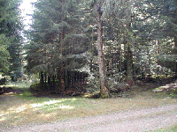

Je n'avais pas trouvé la Sogne
d'Auvers sur le web et pourtant elle figure dans le site "Au
pays de la Bête" dont vous trouvez le lien en bas de
cette page.
Les bois sombres qui recouvrent toute la
montagne, jusqu'au Mont Mouchet semblent propices à
l'accueil de toutes sortes d'animaux, mythiques ou
réels, clairière et futaies épaisses
alternent, mais à cet endroit précis
l'herbe ne repousse plus depuis cet
événement ! :-)
|

En venant de Chanteloube, coupez la route qui
mène à Auvers et continuez tout droit pendant
20 min...
|